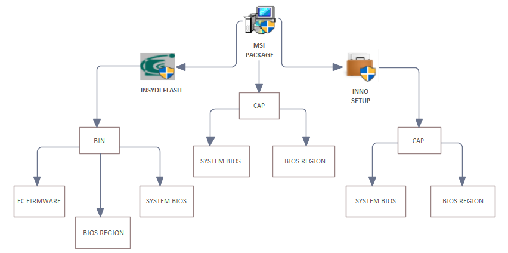
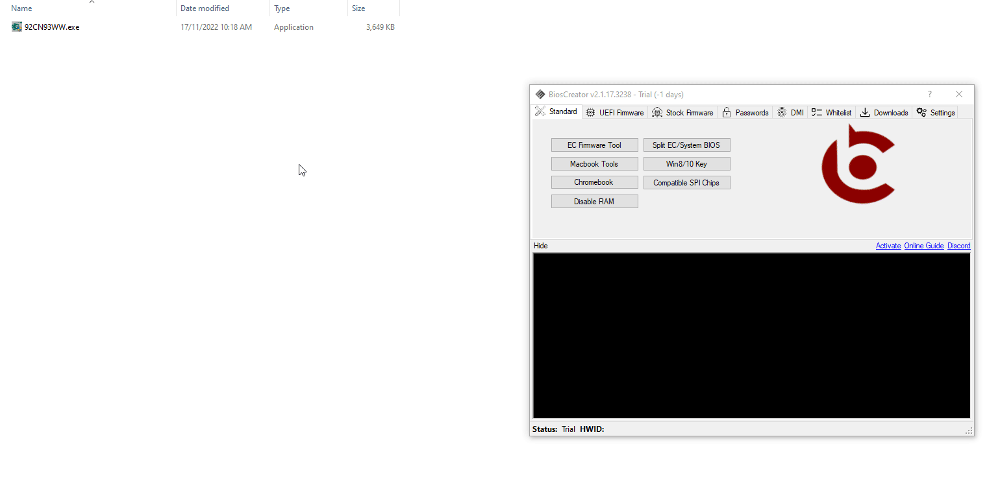
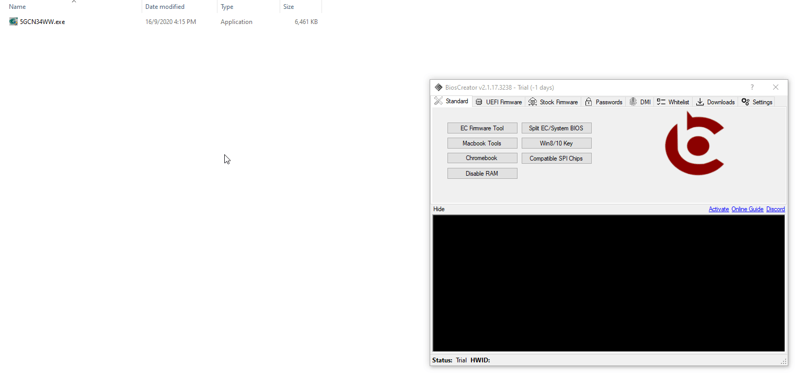
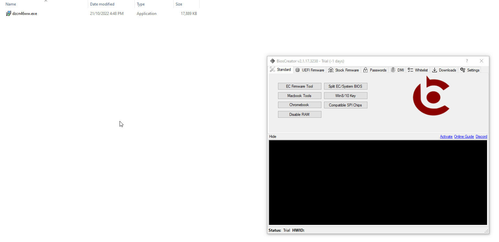

<style>
    .center {
        display: block;
        margin-left: auto;
        margin-right: auto;
        width: 50%;
      }

    a {
      text-decoration: none;
      display: inline-block;
      padding: 8px 16px;
    }
    
    a:hover {
      background-color: #ddd;
      color: black;
    }
    
    .previous {
      background-color: #f1f1f1;
      color: black;
    }
    
    .next {
      background-color: #160042;
      color: white;
    }
    </style>

<section class="support section bg-gray">
	<div class="container">
    <div class="container" style="text-align:justify; margin-bottom:50px;">
      <h4 class="join">Lenovo</h4>
      <p>Lenovo utilizes various methods for packaging firmware and these are:</p>
        <ol>
            <li>InsydeFlash</li>
            <li>InnoSetup</li>
            <li>Self-Extracting File</li>
        </ol>
        <p>BiosExtract supports 2 and 3 but partially support 1 because of the numerous formatting and different version of capsule file, here is a flowchart for extracting Lenovo firmwares.</p>
        

    <div>
        <h2>InsydeFlash</h2>
        <p>BiosCreator automatically handles InsydeFlash packaged Bios update. 
        This function is built-in to Lenovo extraction method and there is no need for you to do additional tasks:</p>
        <p>SYSTEM BIOS</p>
        

        <p>SYSTEM BIOS & EC FIRMWARE</p>
        

        <div>
        <h2>InnoSetup</h2>
            <p>Bios update file that were packaged using InnoSetup can not be decompressed by standard decompression utilities. 
            Here procedure for extracting a Lenovo Bios Update that is package using InnoSetup. The extracted file is a Capsule file (CAP file). Judging from the size of the file, it requires further processing because the size is not in this list.</p>
        <p>SYSTEM BIOS</p>
        


    <a href="{{ site.baseurl }}/stock-firmware/hp" class="previous">&laquo; Previous</a>
    <a href="{{ site.baseurl }}/stock-firmware/asus" class="next">Next &raquo;</a>

		</div> <!-- End row -->
	</div> <!-- End container -->
</section> <!-- End section -->